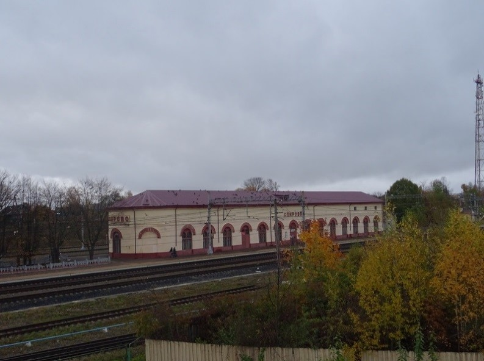
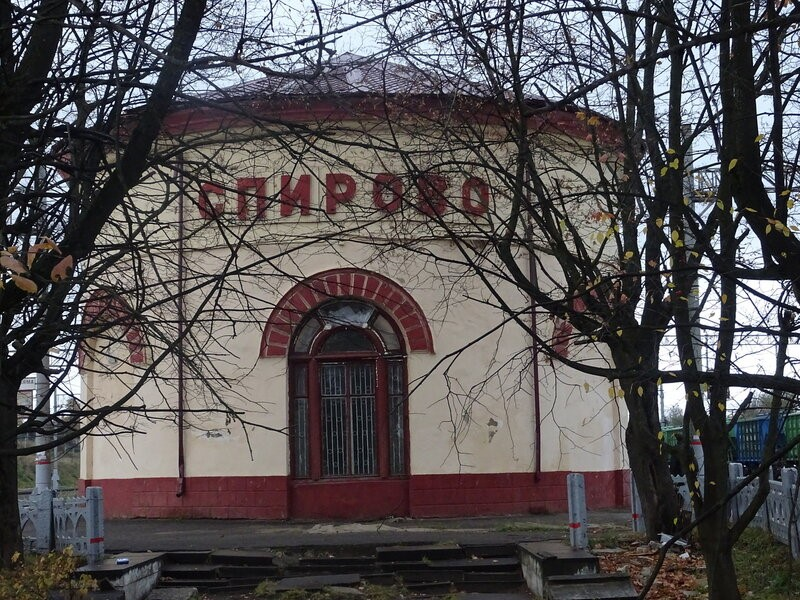
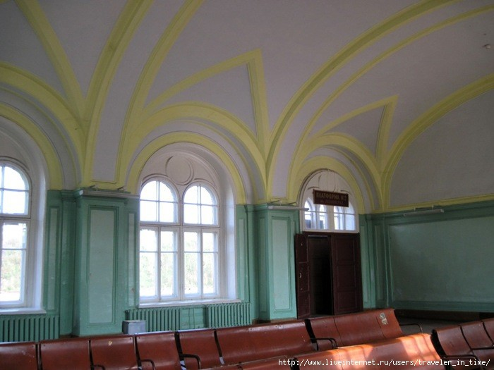
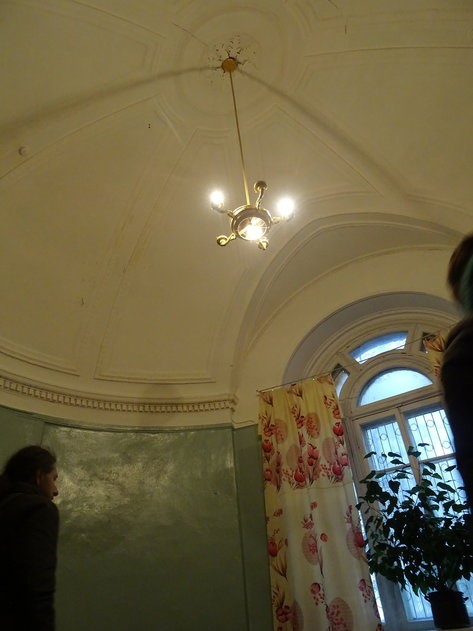
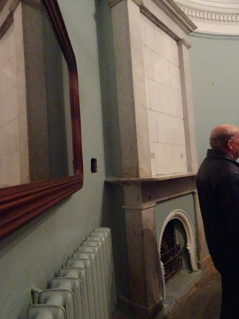
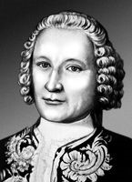
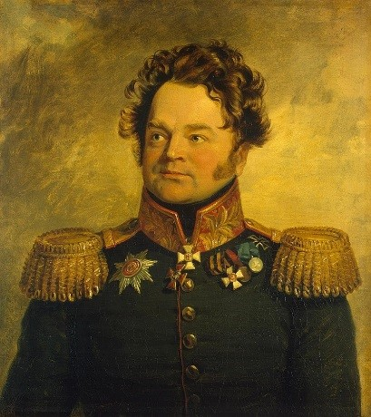

Спирово
Культура
1.Введенский собор в Козлово
Центром застройки села Козлово является Введенский собор. Он начал возводиться в 1803 году, но завершение строительства, ведшегося на средства помещика Ивана Терентьевича Сназина, произошло только через тридцать лет, а все работы по его благоустройству и украшению заняли почти столетие. Проект храма принадлежит какому-то хорошему архитектору (очень возможно, Росси или Стасову), но исполнение его велось явно провинциальными мастерами, при острой нехватке материалов.
2.Здание вокзала



Вокзал станции II класса, типовой. По проекту Рудольфа Желязевича, 1847-49гг. В конце 1840-х годов строилась Николаевская железная дорога. И ее строения являются "историческим ядром" этого города. Спирово - единственная станция, которая сохранила подлинную императорскую комнату. Такие были на всех вокзалах, но только в Спирово она уцелела.

Императорская комната

Камин в императорской комнате
3.Савва Иванович Чевакинский

(1709; по другим данным 1713— между 1772 и 1780; по другим данным после 1783) — русский архитектор эпохи елизаветинского барокко, который работал в Санкт-Петербурге и его окрестностях, главным образом по заказам флота (как главный архитектор Адмиралтейств-коллегии). Родился в деревне Вешки. 16-летним его отдали «в учение навигацких» наук в Петербургскую Морскую академию. В 1741—1767 годах — главный архитектор Адмиралтейств-коллегии. Замечательным его творением стал Никольский Морской собор в столице. В 1745—1760 годах был архитектором Царского Села, руководил работами по реконструкции дворцово-паркового ансамбля.
4.Никанор Михайлович Свечин

(1772—1849) — русский генерал, участник Наполеоновских войн. Дворянин Тверской губернии, родился 3 июля 1772 г. в родовом имении, селе Дубровке Новоторжского уезда(ныне Спировский район), и получил воспитание и образование сначала дома, а потом в Тверском благородном училище. На военную службу поступил 22 января 1791 г. подпрапорщиком в лейб-гвардии Преображенский полк; 14 декабря 1798 г. произведён в прапорщики. Осенью 1805 г., уже в чине поручика, он участвовал в рядах полка в походе в Моравию. Произведённый в 1810 г. в полковники, вскоре после этого он был назначен командиром 2-го батальона лейб-гвардии Преображенского полка. Участвовал в сражениях на Бородинском поле, под Малоярославцем, Тарутином, на Березине. В бою под Кульмом батальон Свечина штыками отразил атаку превосходящих сил французов. Его портрет находится в Военной галерее Зимнего дворца в Санкт-Петербурге.